3 DNMADE 1ère année
3.1 Vocabulaire
| Français | English |
|---|---|
| 15 sur 20 | 15 out of 20 |
| abandonner | to give up |
| adhérer à qqch | to subscribe to stg |
| alors que | whereas |
| améliorer, faire des progrès | to improve |
| appartenir à | to belong to |
| approvisionner, fournir | to supply |
| attendre de qn qu’il fasse qqch | to expect sb to do stg |
| bien que | although |
| capacité d’attention | attention span |
| cautionner | to endorse |
| concret | hands-on |
| de la boue | mud |
| des aiguilles à tricoter | knitting needles |
| du mobilier, des meubles | furniture |
| écouter qqch | to listen to stg |
| expliciter, détailler | to spell out |
| fierté, orgueil | pride |
| fonder | to found |
| froncer les sourcils, désapprouver qqch | to frown (on stg) |
| grandir | to grow up |
| interdire (b…) | to ban |
| interdire (f…) | to forbid |
| interdire (p…) | to prohibit |
| le siège d’une entreprise | the headquarters |
| mais, pourtant | yet |
| même si (concession) | even though |
| mettre en oeuvre | to implement |
| obligatoire | compulsory |
| pendant que | while |
| pouvoir s’acheter qqch | to afford something |
| réclamer, exiger | to call for |
| rendre un hommage | to pay a tribute |
| rester, demeurer | to remain |
| s’avérer | to turn out |
| se concentrer sur qqch | to focus on stg |
| s’empresser de | to rush to do stg |
| stable | steady |
| une politique, une mesure | a policy |
| une usine | a factory |
| un intrus | an odd-one-out |
| un noyau | a core |
| un ordinateur de bureau | a desktop |
| un ordinateur portable | a laptop |
| un outil | a tool |
| un pilier | a pillar |
| un portail | a gate |
| un résumé | a summary |
| un sondage | a poll |
| un vendeur au détail | a retailer |
| un vif désir | a compulsion |
| conseiller | to advise sb to do stg |
| les sous-titres | the subtitles |
| avoir hâte de | to look forward to + -ING |
| être composé de | to be made up of |
| être agenouillé | to kneel (knelt x 2) |
| un pantalon | a pair of trousers |
| un vol | a theft |
| le personnel | the staff |
| un atelier | a workshop |
| un conservateur de musée | a curator |
| un cadre | a frame |
| un indice | a clue |
| une exposition | an exhibition |
| exposer | to display |
| remarquer | to notice |
| perdu | unaccounted for |
| faire attention à qqch | to pay attention to |
| rendre visite à | to pay a visit to |
| sombre | dark |
| vif, éclatant | bright |
| un défaut | a drawback |
| au lieu de | instead of |
| réussir à, parvenir à faire qqch | to manage to do stg |
| un coup de pinceau | a brush stroke |
| réussir à (s…) | to succeed in doing stg |
| une oeuvre d’art | a work of art |
| une affaire | a bargain |
| deviner | to guess |
| un moment | a while |
| adroit | deft |
| tenir compte de | to allow for |
| paresseux | lazy |
| grâce à | thanks to |
| proche de | close to |
| une échelle | a scale |
| une chasse au trésor | a treasure hunt |
| duper, abuser | to fool |
| une veuve | a widow |
| authentique | genuine |
| à la fin, finalement | eventually |
| une arnaque | a scam |
| servir une peine de prison | to do the time |
| médicolégal | forensic |
| un marchand d’art | an art dealer |
| tristement célèbre | infamous |
| une vente aux enchères | an auction |
| reconnu coupable | convicted |
| récolter (un profit) | to net |
| contrefaire, falsifier | to forge |
| inoffensif | innocuous |
| un mélange | a blend |
| divertir, distraire | to entertain |
| intéressé, cupide | money-grubbing |
| riche, aisé | wealthy |
| une série | a series |
| dévoiler, révéler | to expose |
| inattendu | unexpected |
| gagner de l’argent | to earn money |
| une exigence, une contrainte | a requirement |
| un moyen (de transport, par exemple) | a means |
| un moyen de faire qqch | a way to do stg |
| une suggestion, une proposition | a proposal |
| prendre qqch en compte | to take stg into account |
| confiance (en soi) | confidence |
| tenir debout“,”se tenir | to have legs |
| épineux, délicat | tricky |
| franchir une ligne | to cross a line |
| arrogant | overbearing |
| réaction, retour | feedback |
| une position | a stance |
| une personne facile à convaincre, crédule | a pushover |
| têtu | stubborn |
| amadouer | to schmooze |
| cahoteux, accidenté | bumpy |
| lisse, sans heurts | smooth |
| to tackle | to set about dealing with |
| un accord, une approbation | an approval |
| papeterie | stationery |
| finir par faire qqch | to wind up doing stg |
| véhiculer, transmettre | to convey |
| rappeler qqch à qn | to remind sb of stg |
| convaincre qn de dépenser plus | to upsell |
| attendre qqch de qn | to expect sb to do stg |
| un modèle | a template |
| une affiche | a billboard |
| audacieux | bold |
3.2 Définitions
| Français | English |
|---|---|
| a benchmark | a level of quality that can be used as a standard when comparing other things |
| a compulsion | a strong feeling that you must do something |
| a hodgepodge | a heterogeneous mixture |
| a parlour | a room for customers usually of firms providing particular services |
| a powerhouse | a country, organization, or person with a lot of influence |
| a retailer | someone who sells in small quantities directly to the consumer |
| a standard | a level of quality |
| a tribute | something that is done to honor somebody |
| barely | by the smallest amount,only just |
| fare | material provided for use |
| pride | a reasonable or justifiable self-respect |
| steady | happening in a smooth, gradual, and regular way, not suddenly or unexpectedly |
| the odd-man-out | a person or thing that is different from or kept apart from others that form a group or set |
| The writing is on the wall | an expression to mean that there are clear signs that something will fail or no longer exist |
| to afford | to be able to pay |
| to call for | to need or deserve a particular action, remark, or quality |
| to give up | to stop trying to do something before you have finished |
| to implement | to start using a plan or system |
| to improve | to get or make better |
| to spell out | to explain something in a very clear way with details |
| to turn out | to be known or discovered finally and surprisingly |
| to commission | to order to be made |
| to spot | to locate or identify |
| a clue | a piece of evidence that leads one toward the solution of a problem |
| a replica | an exact copy or model of something |
| a workshop | a building where products are made |
| to be in the hang | shown, exhibited |
| a frame | a rigid structure around a picture |
| to notice | to become aware of (something or someone) |
| unaccounted for | lost or unpaid, without explanation |
| barely | by the smallest amount, only just |
| to slot | to fit something into a small space |
| a flourish | an ornamental stroke of the pen in writing |
| a gimmick | something attractive but useless that makes people want to buy something |
| droves | large numbers |
| a cut | a reduction in the number, amount, or rate of something |
| bewildering | confusing and difficult to understand |
| to pit against | to cause to be in competition with others |
| customary | usual |
| to take over | to begin to have control of something |
| a car boot sale | an event in a public place where people sell their unwanted possessions, often from the backs of their cars |
| to beat to the punch | to do or achieve something before someone else is able to |
| beforehand | in anticipation, in advance |
| a pain point | a persistent or recurring problem (as with a product or service) that frequently inconveniences or annoys customers |
| to poke holes in stg | to find mistakes or problems in a plan or in what someone has said |
| a takeaway | a conclusion to be made based on presented facts or information |
| to tweak stg | to make usually small adjustments in or to stg |
| momentum | strength or force gained by motion or by a series of events |
| a journey | an act or instance of traveling from one place to another |
| to come easy | to be easy to achieve or accomplish |
| to buzz | to make a low continuous humming sound like that of a bee |
| a step | an action, proceeding, or measure often occurring as one in a series |
| to walk through | to guide (someone, such as a novice) through an unfamiliar or complex procedure step-by-step |
| to pitch | to present or advertise |
| stellar | outstanding, exceptional |
| to push over the edge | o cause one to commit to doing something they had been considering or close to doing for a long time. |
| a buy-in | acceptance of and willingness to actively support and participate in something |
| a daydream | a pleasant visionary usually wishful creation of the imagination |
| amazeballs | extremely surprising or good: |
| the layout | the way that something is arranged |
| a head start | an advantage that someone has over other people in something such as a competition or race |
| hefty | quite heavy |
| a purpose | something set up as an object or end to be attained |
| a brand | a public image, reputation, or identity conceived of as something to be marketed or promoted |
| main | chief, principal |
| to drive | to give shape or impulse to |
| stunning | strikingly impressive especially in beauty or excellence |
| barely | by the smallest amount |
| bewildering | confusing and difficult to understand: |
| a mock-up | a full-sized structural model built to scale chiefly for study, testing, or display |
| to upsell | to try to convince (a customer) to purchase something additional or at a higher cost |
| to flesh out | to provide more information about something, to make something more complete by adding details |
| to draw out | to remove, to extract |
| to cleanse | to rid of impurities by or as if by washing |
| signage | all the signs that advertise a product or company |
| closure | an often comforting or satisfying sense of finality |
| hip | very fashionable, trendy |
| premium | a high value or a value in excess of that normally or usually expected |
| to wrap up | to summarize, to bring to a usually successful conclusion |
3.3 Traductions
| Français | English |
|---|---|
| Avec qui as-tu travaillé hier? | Who did you work with yesterday? |
| J’ai travaillé avec une amie | I worked with a friend |
| Quelle question de sondage as-tu posée la semaine dernière ? | Which poll question did you ask last week? |
| À qui écris-tu un message ? | Who are you writing a message to? |
| Que devez-vous écouter pour cette leçon ? | What must you listen to for this lesson? |
| Nous devons écouter un enregistrement | We must listen to a recording. |
| As-tu déjà entendu parler de la Silicon Valley ? | Have you ever heard of Silicon Valley? |
| Le professeur veut que nous écoutions la radio en anglais. | The teacher wants us to listen to the radio in English. |
| J’aimerais que mon frère arrête d’utiliser mon ordinateur portable. | I would like my brother to stop using my laptop. |
| Je te conseille de regarder les films avec les sous-titres en anglais. | I advise you to watch films with English subtitles. |
| Je n’aimerais pas que l’école interdise les nouvelles technologies. | I wouldn’t like the school to ban new technologies. |
| L’écriture cursive devrait être enseignée à l’école. | Cursive handwriting should be taught at school. |
| Sir Conran conseillait aux détaillants de ne pas vendre de meubles chers. | Sir Conran advised retailers not to sell expensive furniture. |
| Bien que dans cette école les ordinateurs soient interdits, les élèves peuvent utiliser leurs téléphones portables. | Although in this school laptops are banned, students are allowed to use their smartphones. |
| Les graphistes ont rendu un émouvant hommage à Sir Conran, alors que les concurrents sont restés silencieux. | Graphic designers paid a moving tribute to Sir Conran, whereas competitors remained silent. |
| Les professeurs devraient-ils cautionner l’utilisation des nouvelles technologies? | Should teachers endorse the use of new technologies? |
| À qui appartient cet ordinateur portable ? À un élève. | Who does this laptop belong to? It’s a student’s. |
| Le professeur veut que nous finissions toutes les activités MOODLE | The teacher wants us to finish all the MOODLE activites. |
| Il s’avère que je n’ai pas réussi à toutes les faire | It turns out that I didn’t manage to do them all. |
| Les visiteurs de musée devraient faire plus attention aux oeuvres qu’ils regardent | Visitors in museums should pay more attention to the works of art they look at. |
| Cette image est composée d’une partie supérieure et d’une partie inférieure | This picture is made up of an upper part and a lower part. |
| Que penses-tu de l’exposition à Dulwich? | What do you think of the exhibition in Dulwich? |
| Lorsqu’on visite un musée, on s’attend à voir de vraies oeuvres d’art | When you visit a museum, you expect to see genuine works of art. |
| Les gens devraient passer plus de temps à regarder les toiles | People should spend more time looking at paintings. |
| On devrait tenir plus compte de l’éclairage pour exposer les oeuvres. | Lighting should be allowed for more to display works of art. |
| Au lieu de foncer dans les musées, les gens devraient regarder moins d’oeuvres. | Instead of rushing through museums, people should look at fewer works of art. |
| Notre professeur veut que nous créions le logo de notre cours | Our teacher wants us to create the logo for our course. |
| Nous n’avons pas encore fini notre série de projets | We haven’t finished our series of projects yet. |
| Nous devons tenir compte des exigences de notre client | We must allow for our client’s requirements. |
| As-tu eu le temps hier de regarder mes suggestions ? | Did you have time to take a look at my proposals? |
| Aujourd’hui je vais vous présenter notre travail et vous expliquer nos choix graphiques | Today I’m going to present our work and explain our graphic choices to you. |
| Mais d’abord permettez-moi de vous rappeler les exigences et les objectifs de ce logo | But first let me remind you what the aims and requirements of this logo are. |
| Nous avons choisi de mettre le drapeau britannique en haut à droite pour les raisons suivantes | We chose to put the Union Jack in the top-right corner for the following reasons. |
| Nous voulions que le logo véhicule le message dont nous avions parlé en réunion, à savoir… | We wanted the logo to convey the message we talked about during the meeting, namely… |
3.4 Flashcards
| Images | Expressions |
|---|---|

|
a billboard |
| a bumpy road | |
| a core | |
| a curator | |
| a display | |

|
a drum |
| 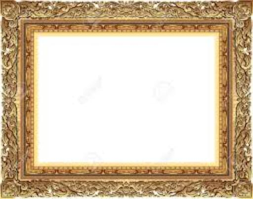 | a frame |

|
a hill |
| a leaf | |

|
a palate cleanser |
| a parlour | |
| a path | |
| 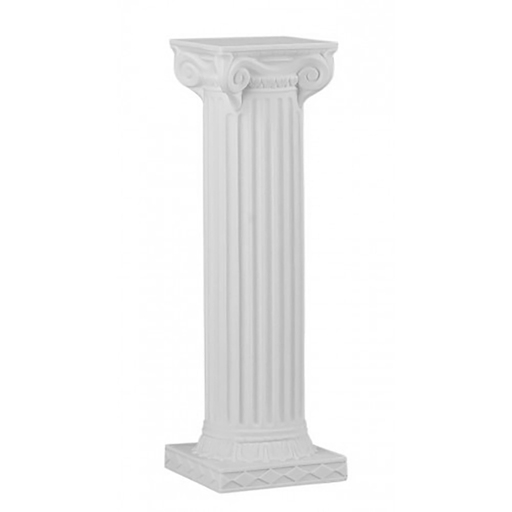 | a pillar |
| 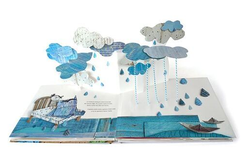 | a pop up book |
| 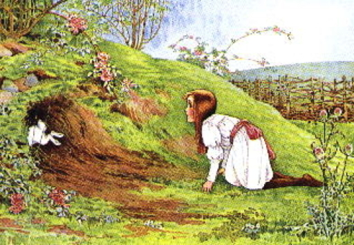 | a rabbit hole |
| 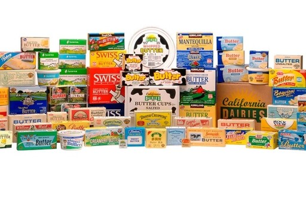 | a range of products |
| a sales pitch | |
| 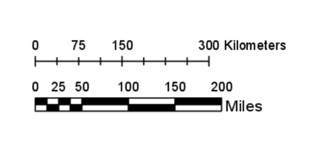 | a scale |
| 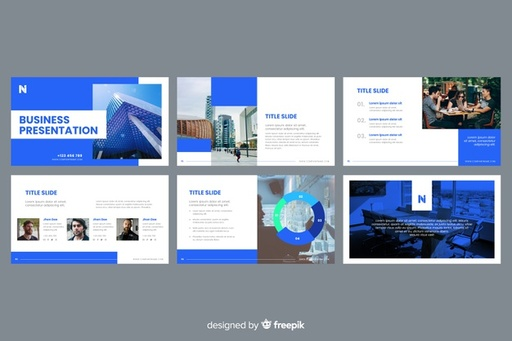 | a slide show |
| a split background | |
| a victory flag | |
| a wax seal | |
| a windy road | |
| 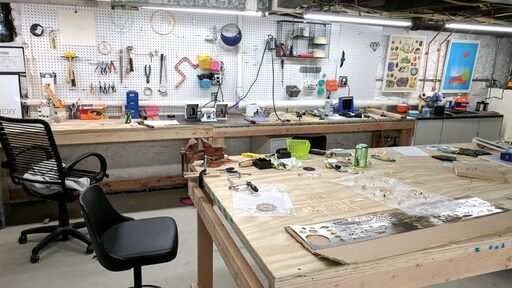 | a workshop |
| a writing on the wall | |
| 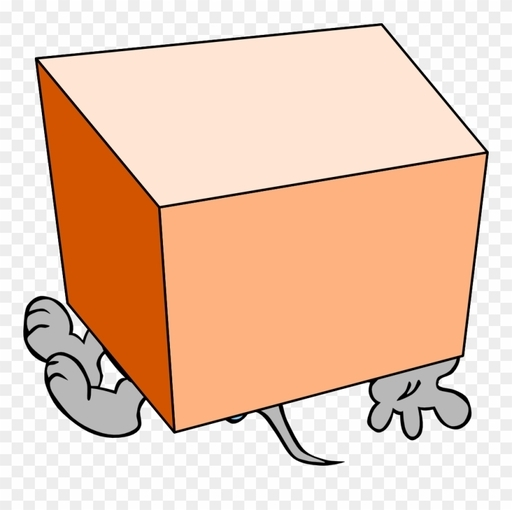 | beneath a cube |
| 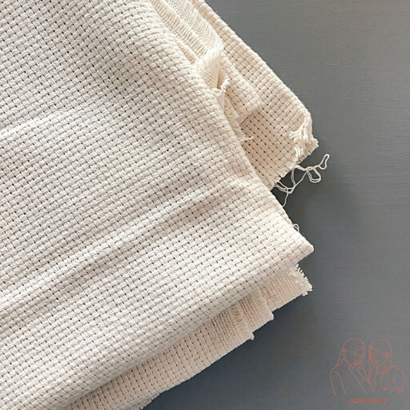 | cloth |
| 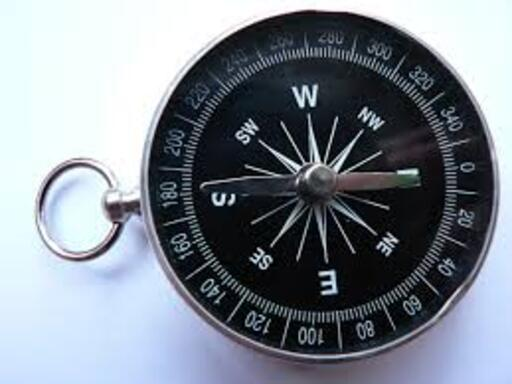 | compass |

|
cufflinks |
| curly | |
| cursive writing | |
| 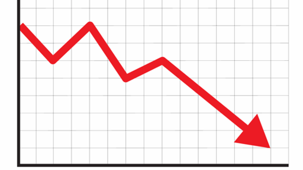 | decline |
| egg tempera paint | |
| foot steps | |
| girl with a pearl earring | |
| gold foil | |
| heart | |
| hodgepodge | |
| kindergarten | |
| 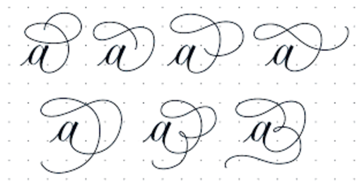 | letter A with flourishes |
| mockup designs | |
| 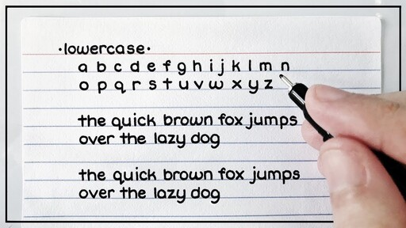 | print writing |
| scaffolding | |
| 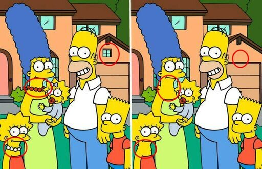 | spot the difference |
| 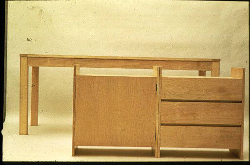 | summa |
| the brain | |
| 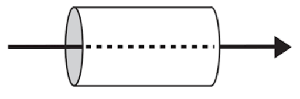 | through |
| to display works of art | |
| to drag | |
| to flip a coin | |
| to poke | |
| 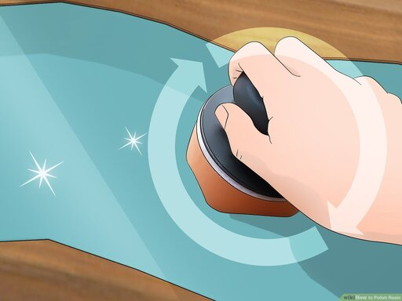 | to polish |
| 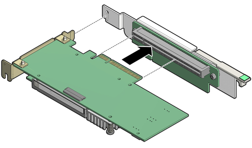 | to slot something |
| tools | |
| trousers | |
| 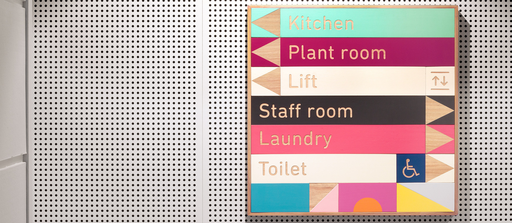 | wayfinding design |
3.5 Pronunciation
| Images | Expressions |
|---|---|
| afford | |
| allow | |
| almost | |
| auction | |
| barely | |
| beneath | |
| bewilder | |
| bold | |
| career | |
| clue | |
| core | |
| crucial | |
| curator | |
| customary | |
| different | |
| diminish | |
| doubt | |
| emphasis | |
| eventually | |
| famous | |
| fare | |
| figure | |
| forensic | |
| forge | |
| frame | |
| furniture | |
| genuine | |
| gimmick | |
| heart | |
| history | |
| implement | |
| improve | |
| infamous | |
| innocuous | |
| laboratory | |
| museum | |
| pillar | |
| portrait | |
| product | |
| range | |
| reason | |
| replica | |
| retailer | |
| series | |
| sheet | |
| staff | |
| standard | |
| steady | |
| theft | |
| though | |
| thought | |
| through | |
| tool | |
| treasure | |
| vintage | |
| visionary | |
| widow |